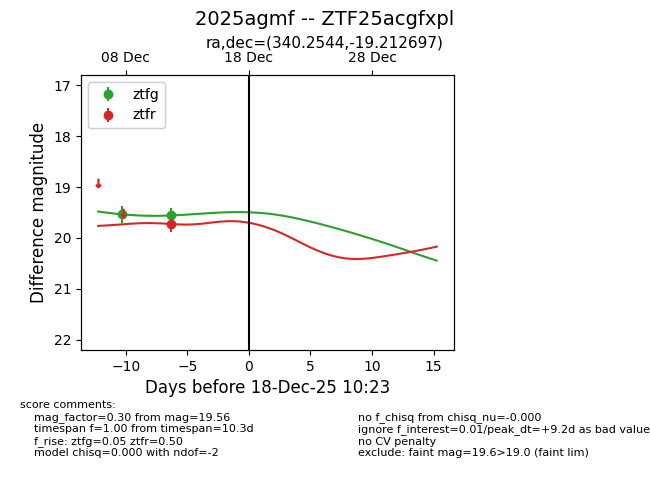
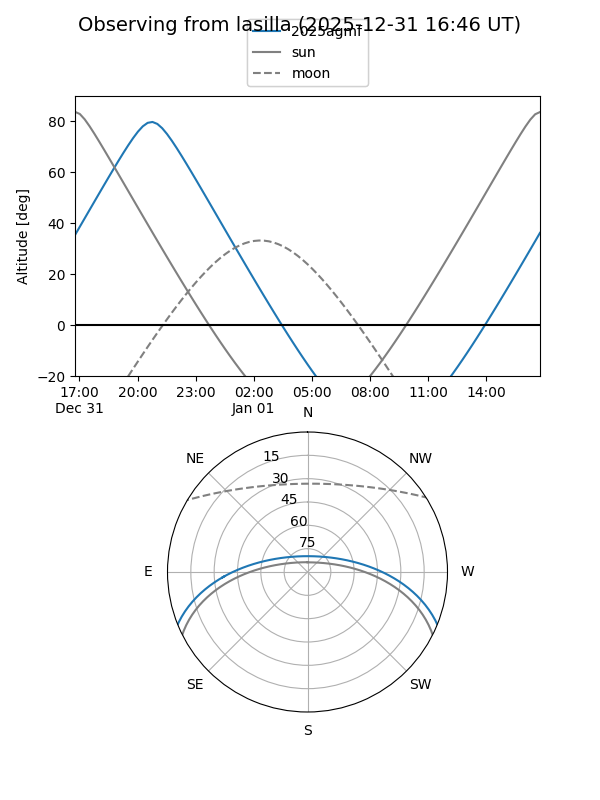
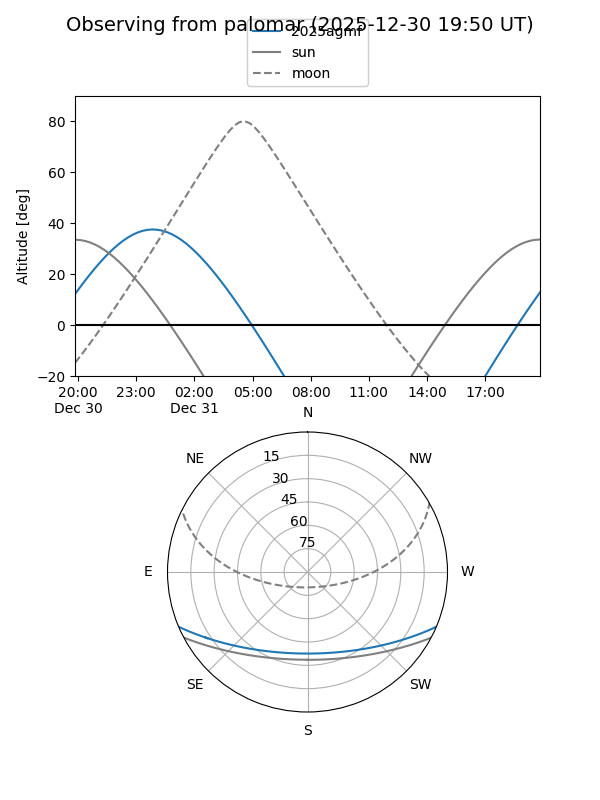
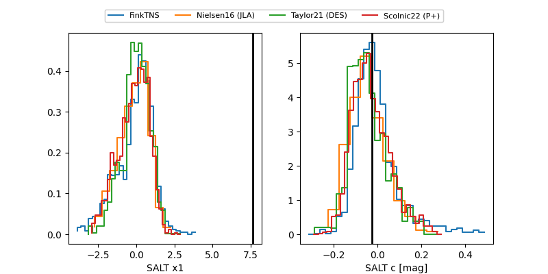

2025agmf
Target 2025agmf at 2025-12-31 18:00
Aliases and brokers:
FINK: link
Lasair: link
ALeRCE: link
TNS: link
YSE: link
alt names
ZTF25acgfxpl (ztf,fink_ztf)
2025agmf (tns,yse)
Coordinates:
equatorial (ra, dec) = 340.2544,-19.21270
equatorial (HMS+DMS) = 22:41:01.06,-19:12:45.71
galactic (l, b) = (40.7489,-59.09568)
Flags:
Photometry:
last ztfg=19.56, ztfr=19.73
2 ztfg, 1 ztfr detections
Lightcurve

Visibility


Additional plots
